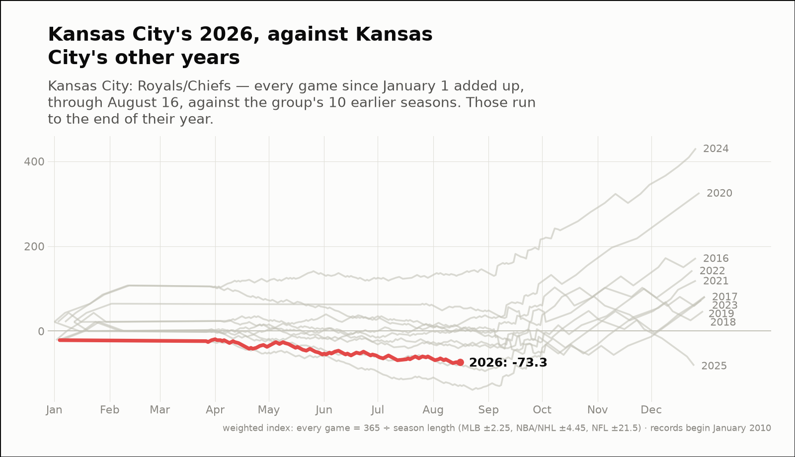
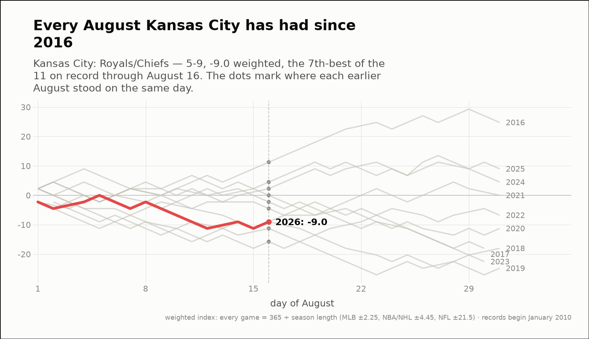
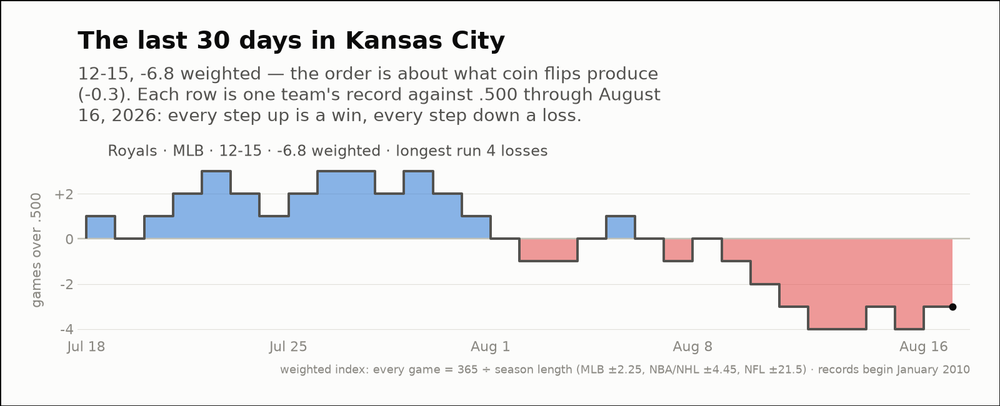

City of the day — Kansas City
Kansas City: Royals/Chiefs
- 2026 so far
- 51-75, -73.3 weighted over 126 games; longest run 8 straight losses
- Order of results
- about as clumped as coin flips (+1.8)
- Earlier seasons (full-year weighted)
- 2016 +171.8, 2017 +81.4, 2018 +46.7, 2019 +72.6, 2020 +325.5, 2021 +118.8, 2022 +142.6, 2023 +80.6, 2024 +430.5, 2025 -81.4
- Last 30 days
- 12-15, -6.8 weighted; longest run 4 straight losses
- Window opens
- July 18, 2026
- August 2026 through day 16
- 5-9, -9.0 weighted — the 7th-best of the 11 on record
- Same August in earlier years (same stretch)
- 2016 +11.3, 2017 -9.0, 2018 -15.8, 2019 -11.3, 2020 -4.5, 2021 -9.0, 2022 +0.0, 2023 -2.2, 2024 +2.2, 2025 +4.5
| Team | Last 30 days | Weighted | Longest run |
|---|---|---|---|
| Royals | 12-15 | -6.8 | 4 straight losses |


